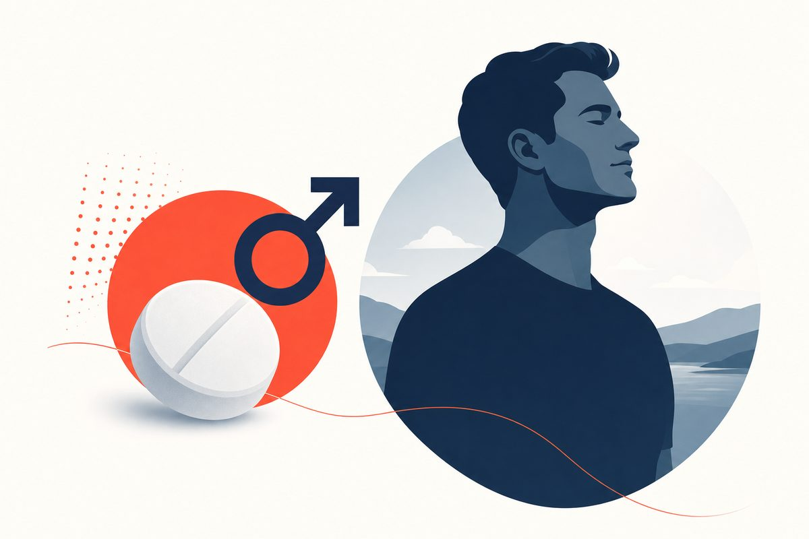

Key Takeaways
- Between 30 million and 50 million U.S. men have ED, according to NIDDK. It becomes more common with age but is a treatable medical condition with identifiable causes, and it often shares causes with heart disease.
- ED is often the earliest clinical sign of cardiovascular disease. An umbrella review of meta-analyses found ED predicts coronary heart disease (RR 1.50) and stroke (RR 1.36), and the 2024 Princeton IV Consensus tells clinicians to treat men with ED as at risk for cardiac events until proven otherwise.
- PDE5 inhibitors (sildenafil, tadalafil, vardenafil, avanafil) are the most common first treatment. The AUA (2018) guideline presents every treatment that is not contraindicated as a potential first-line option, chosen through shared decision-making. Generic sildenafil and tadalafil are widely available.
- In the 2023 NEJM TRAVERSE trial, testosterone therapy in hypogonadal men at high cardiovascular risk was noninferior to placebo for major adverse cardiac events, though atrial fibrillation, acute kidney injury, and pulmonary embolism were more common with testosterone.
- Newer evidence connects ED to obstructive sleep apnea (about 51 percent prevalence in one OSA cohort), GLP-1 receptor agonist therapy (bidirectional effects depending on baseline hypogonadism), and aerobic exercise (average IIEF-EF gain of 2.8 points, larger in severe ED).
- Over-the-counter "male enhancement" supplements remain a serious safety issue. The FDA warns that many sexual enhancement products are likely to be contaminated with dangerous hidden ingredients.

Here is something worth understanding before reading anything else about erectile dysfunction: it is not primarily a sexual problem. It is a vascular problem. And in a substantial share of men, it is the first sign that something dangerous is happening inside your blood vessels, sometimes years before a heart attack or stroke ever occurs.
Erectile dysfunction, defined as the consistent inability to achieve or maintain an erection sufficient for satisfactory sexual performance, affects between 30 million and 50 million men in the United States. About 40 percent of men are affected at age 40, and 70 percent report ED by age 70.[1] Yet the majority of men with ED never discuss it with a physician. That silence can be medically dangerous, because for many men the first opportunity to catch cardiovascular disease early quietly comes and goes in the bedroom.
This guide is a physician's attempt to change that. It covers the biology, the newest evidence from 2023 through 2026, the medications and how to choose among them, the emerging role of GLP-1 agonists, sleep apnea and obesity as underappreciated drivers, what to do after prostate surgery, and why the supplement aisle is more dangerous than most patients realize. Key claims are cited to the source that supports them.
What Causes Erectile Dysfunction?
An erection is a surprisingly complex vascular event. It requires coordinated activity of the nervous system, blood vessels, hormones, and psychological state. Sexual arousal triggers nerve signals that release nitric oxide in the penile arteries. Nitric oxide activates guanylate cyclase, which produces cyclic GMP, the molecule that relaxes smooth muscle in the arterial walls of the penis and allows blood to fill the corpora cavernosa. Anything that disrupts this chain, whether damaged blood vessels, impaired nerve signaling, hormonal deficiency, or psychological interference, can cause ED.
Vascular causes (the most common)
ED is considered an early manifestation of cardiovascular disease.[2] The same process that narrows coronary arteries, endothelial dysfunction and atherosclerotic plaque buildup, also narrows the penile arteries. The critical difference is size. Penile arteries are 1 to 2 mm in diameter, roughly one-third the size of coronary arteries. Plaque buildup causes noticeable problems in the penis first, often years before it affects the heart. Hypertension, dyslipidemia, diabetes, and smoking all damage the endothelium and accelerate this process.
Neurological causes
Conditions that damage nerves involved in erection signaling include diabetes (diabetic neuropathy), multiple sclerosis, Parkinson's disease, spinal cord injury, and pelvic surgery, particularly radical prostatectomy, which can injure the cavernous nerves that run alongside the prostate.
Hormonal causes
Testosterone is not the primary driver of the erection mechanics themselves, but it modulates libido and contributes to nitric oxide signaling. Low testosterone (hypogonadism) should be diagnosed only when symptoms are paired with consistently low levels, confirmed by repeating a fasting morning blood test.[3] Other hormonal contributors include thyroid dysfunction, elevated prolactin, and poorly controlled diabetes.
Psychological causes
Performance anxiety, depression, relationship stress, and generalized anxiety can all cause or worsen ED. In younger men without vascular risk factors, psychological causes are especially common. A useful clinical distinction: psychological ED tends to be situational (erections still occur during sleep or with specific stimuli but not with a partner), while vascular ED is typically consistent across all situations.
Medication-induced ED
A frequently overlooked cause. Common culprits include:
- Antihypertensives: beta-blockers (especially older agents like atenolol) and thiazide diuretics are well-established contributors. ACE inhibitors and ARBs are generally better tolerated.
- Antidepressants: SSRIs (fluoxetine, sertraline, paroxetine) cause sexual dysfunction in 30 to 70 percent of patients. Bupropion and mirtazapine have lower rates.
- Antiandrogens and 5-alpha reductase inhibitors: finasteride and dutasteride (used for BPH and hair loss) can cause ED that occasionally persists after stopping.
- Opioids: chronic opioid use suppresses testosterone production (opioid-induced hypogonadism) and is an increasingly recognized cause.
- Recreational substances: excessive alcohol, cannabis, and anabolic steroids all impair erectile function through distinct mechanisms.
ED as a Cardiovascular Warning Sign
This is the single most important section in the guide. If you take nothing else away, understand this: erectile dysfunction can be the first clinical manifestation of systemic cardiovascular disease, and the current U.S. cardiology consensus now treats it that way.
The penile arteries (1 to 2 mm diameter) are significantly smaller than coronary arteries (3 to 4 mm). When atherosclerosis begins, the smaller vessels are affected first, producing ED as the earliest symptom. A 2021 BJU International umbrella review of systematic reviews and meta-analyses found men with ED have an increased risk of cardiovascular disease (RR 1.45, 95 percent CI 1.36 to 1.54), coronary heart disease (RR 1.50), cardiovascular mortality (RR 1.50), myocardial infarction (RR 1.55), stroke (RR 1.36), and all-cause mortality (RR 1.25), all with P less than 0.001.[4]
The 2024 Princeton IV Consensus, published in Mayo Clinic Proceedings, tells clinicians to treat men with ED as being at risk for cardiac events until proven otherwise, and reviews recent evidence of potential cardioprotective effects of PDE5 inhibitors.[5] A September 2024 American College of Cardiology summary of Princeton IV notes that the panel pushes for future ACC/AHA guidelines to consider ED an atherosclerotic cardiovascular disease risk-enhancing factor, and that PDE5 inhibitors are safe in patients with overt or latent cardiovascular disease.[6]
Princeton IV Cardiovascular Risk Stratification
Princeton IV, as summarized by the American College of Cardiology, sorts men with cardiovascular disease into three risk tiers before they resume sexual activity:[6]
| Risk tier | Typical patient | Recommendation |
|---|---|---|
| Low | Can reach 5 METs without ischemia on a recent exercise test, with controlled hypertension, NYHA class I to II heart failure, successful revascularization, or mild valvular disease | Considered low risk. |
| Intermediate | Moderate angina, myocardial infarction 2 to 8 weeks earlier without intervention, NYHA class III heart failure, or other atherosclerotic disease such as prior stroke, transient ischemic attack, or peripheral artery disease | Further evaluation before resuming sexual activity. Completing 4 minutes of the standard Bruce treadmill protocol without symptoms supports safety. |
| High | NYHA class IV heart failure, uncontrolled hypertension, unstable or refractory angina, recent untreated myocardial infarction, or high-risk arrhythmias | Defer sexual activity until the cardiac condition stabilizes; cardiology referral is warranted. |
Practically, this means: if you are a man under 60 with new-onset ED and no clear explanation, your evaluation should include blood pressure, fasting glucose or HbA1c, a lipid panel, and a discussion of ASCVD risk. ED combined with even one additional risk factor (hypertension, diabetes, obesity, smoking, family history) warrants meaningful cardiovascular workup, not just a prescription.
What's Changed in 2024 to 2026
The AUA's 2018 ED guideline set the current U.S. framework.[7] The EAU published a 2026 limited update of its Sexual and Reproductive Health Guidelines, which includes the ED chapter.[8] Several things have shifted in clinical practice over the last two years, even without a wholesale guideline rewrite.
The traditional stepwise approach (pills, then injections, then surgery) has been replaced by shared decision-making. All patients should be informed of every treatment modality, from lifestyle changes to penile prostheses, and the choice is individualized based on preferences, severity, comorbidities, and expectations rather than a fixed ladder.[7]
PDE5 inhibitors remain first-line
PDE5 inhibitors are the most commonly used first treatment, and under the AUA guideline they sit alongside every other option that is not contraindicated as a potential first-line choice.[7] Among the four agents (sildenafil, tadalafil, vardenafil, avanafil), the practical choice usually turns on onset, duration, food interaction, and cost.
Testosterone therapy and heart safety
The 2023 NEJM TRAVERSE trial (n=5,246 men with hypogonadism and preexisting or high risk of cardiovascular disease) found transdermal testosterone noninferior to placebo for major adverse cardiac events (HR 0.96, 95 percent CI 0.78 to 1.17) over a mean 21.7 months of treatment. Atrial fibrillation, acute kidney injury, and pulmonary embolism were more common in the testosterone group.[9] A 2026 observational cohort in the Journal of Sexual Medicine found higher major cardiac event risk in men using testosterone (HR 1.27), but men diagnosed with testosterone deficiency showed the same increase, and the authors say it is unclear whether testosterone itself drives the risk.[10]
Low-intensity shockwave therapy: low-certainty evidence
The 2025 Cochrane review of 21 randomized trials (1,357 men) found low-intensity shockwave therapy (LiSWT) may improve short-term IIEF-EF scores by roughly 3.9 points and long-term scores by 5.3 points versus sham, with low certainty of evidence.[11] An abridged version was published in BJU International in early 2026 for wider clinical distribution.[12] The full review rated the evidence low certainty and noted that several studies were industry-funded, mainly by device makers.[11] In practice it may help some men, but the evidence is not strong enough to recommend it routinely.
Generic options
Generic sildenafil and tadalafil are widely available, and generic cash prices are far below what brand-name pills used to cost. Prices change often and vary by pharmacy, dose, and quantity, so this guide does not quote a figure; check a current price before you fill.
Decision Framework: Home, Doctor, or Urgent Care
One of the most useful clinical skills is helping men understand when ED warrants medical evaluation and when it can be addressed with lifestyle changes.
| Scenario | Recommended approach | Rationale |
|---|---|---|
| Occasional difficulty with erections after alcohol, stress, fatigue, or sleep deprivation in an otherwise healthy man | Self-management: reduce alcohol, improve sleep, manage stress, increase physical activity | Situational ED is common and usually resolves with lifestyle adjustment. Not a medical emergency. |
| Persistent ED lasting more than 3 months in a man with no known cardiovascular risk factors | Schedule a physician evaluation. Not urgent, but important. | Persistent ED warrants investigation for underlying vascular, hormonal, or psychological causes. |
| ED with known risk factors (diabetes, hypertension, obesity, smoking, dyslipidemia, family history of heart disease) | Physician evaluation recommended, including a cardiovascular risk assessment. | ED in the context of vascular risk factors may signal early atherosclerosis and warrants cardiovascular screening.[5] |
| ED with new-onset chest pain, shortness of breath, or exercise intolerance | Urgent medical evaluation, same day or emergency department. | The combination of ED and cardiac symptoms suggests significant cardiovascular disease requiring immediate assessment. |
| Prolonged erection lasting more than 4 hours (priapism) | Emergency department immediately. | Priapism is a urological emergency. Untreated ischemic priapism can cause permanent penile damage within 4 to 6 hours. |
Treatment Options
PDE5 inhibitors: the first-line standard
Phosphodiesterase type 5 (PDE5) inhibitors work by blocking the enzyme that breaks down cGMP, the molecule responsible for smooth muscle relaxation and blood flow into the penis. They do not cause erections on their own. Sexual stimulation is still required.
| Medication | Typical PRN dose | Onset | Duration | Food interaction |
|---|---|---|---|---|
| Sildenafil (Viagra) | 50 mg (range 25 to 100 mg) | 30 to 60 min | 4 to 6 hr | High-fat meals delay absorption. Best on empty stomach or light meal. |
| Tadalafil (Cialis) PRN | 10 mg (range 5 to 20 mg) | 30 to 45 min | 24 to 36 hr | Not affected by food. |
| Tadalafil daily | 2.5 or 5 mg once daily | Continuous coverage after ~5 days | 24/7 while dosed | Not affected by food. |
| Vardenafil (Levitra) | 10 mg (range 5 to 20 mg) | 30 to 60 min | 4 to 5 hr | High-fat meals reduce effectiveness. |
| Avanafil (Stendra) | 100 mg (range 50 to 200 mg) | 15 to 30 min | 6 to 12 hr | Can be taken with or without food. |
Which one is right for you? This is a shared-decision conversation, but useful rules of thumb: choose sildenafil if you want a low-cost generic and can plan around dosing timing and food. Choose tadalafil (PRN or daily) if you want long-duration coverage or spontaneity, or if you also have BPH symptoms (the 5 mg daily dose is FDA-approved for both indications).[13] Choose avanafil if fastest onset or fewest visual and vasodilatory side effects matter most. A 2025 analysis of 53,517 FDA Adverse Event Reporting System reports (2004 to 2024) found the side effects listed on each label for all four drugs, plus some nervous-system, cardiovascular, and eye signals not on the labels that need further study.[14]
PDE5 inhibitors are absolutely contraindicated with nitrate medications (nitroglycerin, isosorbide mononitrate, isosorbide dinitrate) and recreational nitrites ("poppers"). The combination can cause severe, potentially fatal hypotension. If you use any form of nitrate, PDE5 inhibitors are off the table. The tadalafil label also advises caution with alpha-blockers and notes that CYP3A4 inhibitors such as ketoconazole and ritonavir increase tadalafil exposure.[13]
Common reasons for PDE5 inhibitor "failure"
Before concluding a PDE5 inhibitor does not work, check the fundamentals. Incorrect use is a common reason a medication seems not to work. Common mistakes:
- Not waiting long enough for the medication to take effect
- Taking sildenafil or vardenafil after a large fatty meal
- Not providing adequate sexual stimulation. These drugs do not work without it.
- Giving up after one or two attempts.
- Using a suboptimal dose. Titrate to the maximum tolerated dose before switching agents.
- Unrecognized hypogonadism. Adding testosterone to PDE5 inhibitor therapy when testosterone is truly low can restore response.
Testosterone replacement therapy
For men with confirmed hypogonadism (symptoms plus consistently low testosterone on repeat fasting morning tests) and symptoms of deficiency, testosterone replacement can improve libido and augment the response to PDE5 inhibitors. It is not effective as standalone ED therapy. Options include topical gels, intramuscular injections, subcutaneous pellets, and nasal formulations. Monitoring includes hematocrit (for polycythemia), PSA (prostate health), and periodic testosterone levels. The 2023 TRAVERSE trial found no increase in major adverse cardiac events but more atrial fibrillation, acute kidney injury, and pulmonary embolism with testosterone. These are worth counseling patients about even though the overall MACE signal is neutral.[9]
Vacuum erection devices
Vacuum devices create negative pressure around the penis, drawing blood into the corpora cavernosa. A constriction ring at the base maintains the erection. Non-invasive, no systemic side effects, effective for men who cannot use PDE5 inhibitors, and standard in penile rehabilitation after prostate surgery. Main limitations are the mechanical nature of the process and partner acceptance.
Psychological and behavioral approaches
For men with psychogenic ED or a significant psychological component, cognitive behavioral sex therapy and sensate focus techniques can be highly effective. Sex therapy also addresses performance anxiety directly, which medication alone does not. Combined pharmacotherapy plus sex therapy is often the highest-yield approach for younger men with situational ED.
Second-line and surgical options
For men who do not respond to PDE5 inhibitors after adequate trial, options include intracavernosal injections (alprostadil, or bimix and trimix combinations), intraurethral alprostadil (MUSE), and ultimately penile prosthesis implantation. Penile implants are irreversible, and many men choose them after other treatments have not worked.
GLP-1 Agonists and ED: A Two-Sided Story
Semaglutide (Ozempic, Wegovy), tirzepatide (Mounjaro, Zepbound), and liraglutide have moved from diabetes drugs to weight loss drugs to household names in just a few years. Their effect on erectile function turns out to depend on who is taking them and why.
In obese men with functional hypogonadism (low testosterone driven by obesity rather than testicular failure), GLP-1-based drugs can raise testosterone, and in one pilot study tirzepatide also improved erectile function scores. A 2025 controlled pilot study in Reproductive Biology and Endocrinology compared tirzepatide, lifestyle intervention, and transdermal testosterone in men with obesity-associated hypogonadism. Tirzepatide produced greater weight loss and IIEF-5 improvement than lifestyle alone, and raised total testosterone, luteinizing hormone, follicle-stimulating hormone, and sex hormone-binding globulin significantly.[15] A separate 2025 trial in Diabetes, Obesity and Metabolism comparing semaglutide to testosterone in men with type 2 diabetes and hypogonadism found semaglutide improved sperm morphology while testosterone reduced sperm counts, though only testosterone significantly improved IIEF-15 scores.[16]
In non-diabetic, non-hypogonadal men taking semaglutide purely for weight loss, the picture is different. A 2024 TriNetX database analysis of 3,094 such men aged 18 to 50 found higher rates of new ED diagnosis or PDE5 inhibitor prescription (1.47 versus 0.32 percent) and of testosterone deficiency (1.53 versus 0.80 percent) than in matched men never prescribed semaglutide.[17] Absolute rates were low, and a database study cannot prove the drug caused the difference. A 2026 narrative review in Sexual Medicine Reviews found GLP-1 receptor agonists show promising results in men, while case reports suggest possible sexual side effects with tirzepatide; the authors call the overall evidence inconsistent.[18]
Practical takeaway: if you are on a GLP-1 and notice new erectile difficulty, this is worth a testosterone check and a conversation with your prescriber. Do not stop the medication on your own, and do not assume the drug caused the problem. The metabolic changes that improved may still be net positive for long-term sexual health.
Obstructive Sleep Apnea and ED
Obstructive sleep apnea (OSA) is one of the most underrecognized drivers of ED. A 2018 study of 150 men newly diagnosed with moderate to severe OSA found an ED prevalence of 51 percent, meaning roughly one in two of these men also had erectile dysfunction.[19]
Proposed mechanisms include intermittent low oxygen at night, which can damage the lining of blood vessels, and fragmented sleep, which can lower testosterone.
Continuous positive airway pressure (CPAP) may help, but the size of the benefit is uncertain. In the same 2018 trial, erectile function scores rose after three months of CPAP, but the authors could not determine conclusively whether CPAP works as a stand-alone ED treatment.[19] A 2023 meta-analysis in Medicina (8 studies, 457 patients) reported higher post-treatment IIEF-5 domain scores with sildenafil than with CPAP (37.7 versus 27.3), and its authors suggest combining the two may add benefit.[20] A 2021 Cochrane review rated the evidence for CPAP versus no CPAP as very uncertain, and found sildenafil may slightly improve erectile function compared with CPAP at 12 weeks.[21] Treating OSA is still worthwhile for its own sake.
Screen yourself: if you snore loudly, wake unrefreshed, have witnessed apneas, morning headaches, or daytime sleepiness alongside ED (especially if you are also overweight or have a large neck circumference), ask your doctor about a home sleep study. STOP-BANG is a validated 8-question screening tool worth taking online. A home sleep test is often covered by insurance and can be arranged without a sleep clinic visit.
ED After Prostate Surgery
Radical prostatectomy, the standard curative surgery for localized prostate cancer, injures or irritates the cavernous nerves that run along the prostate. Even with nerve-sparing technique, ED is common in the first year and can persist. Penile rehabilitation aims to preserve erectile tissue during the recovery window.
Common regimens use daily low-dose PDE5 inhibitors (typically tadalafil 2.5 to 5 mg daily or sildenafil 25 to 50 mg on scheduled nights), often combined with a vacuum erection device.
Honest evidence caveat: the 2018 Cochrane review (8 randomized trials, 1,699 men) found that scheduled PDE5 inhibitor use after prostatectomy may not improve self-reported potency or erectile function any more than on-demand use, based on mostly very low-quality evidence.[22] We found no updated Cochrane review since. Practically, many urologists still recommend rehabilitation because the downside is small (a few months of daily generic PDE5 inhibitor use), while the potential upside (preserved erectile tissue, faster return of function) is meaningful even if trial-level proof is imperfect.
Lifestyle Modifications: What the Evidence Actually Shows
Lifestyle changes are not a soft recommendation. They are backed by hard data and should be considered foundational to any ED treatment plan. In many cases they address the root cause rather than simply managing the symptom.
Exercise
A 2023 Journal of Sexual Medicine meta-analysis of 11 randomized trials found aerobic exercise significantly improved IIEF-EF scores by an average of 2.8 points (95 percent CI 1.7 to 3.9). The effect was larger in men with more severe baseline ED: +2.3 points in mild ED, +3.3 in moderate ED, and +4.9 in severe ED.[23] A 2024 Andrology update comparing exercise modalities found aerobic training alone showed a large effect (SMD 0.81), while pelvic floor training and combined aerobic-plus-resistance did not reach significance.[24] A 2025 meta-analysis in the Journal of Men's Health found larger effects in men under 60 and with low-intensity programs lasting up to three months.[25]
Practical prescription: 30 to 60 minutes of moderate-intensity aerobic activity, 3 to 5 times per week, for at least 8 to 12 weeks. Walking counts. The mechanism is endothelial repair, the same vascular process that underlies both ED and cardiovascular disease.
Weight loss
In a JAMA randomized trial of 110 obese men with ED, those coached to lose 10 percent or more of body weight through diet and exercise improved their erectile function scores, and 17 of 55 reached a normal score after two years, versus 3 of 55 controls.[26] Obesity contributes to ED through insulin resistance, chronic inflammation, reduced testosterone (functional hypogonadism), and endothelial dysfunction.
Smoking cessation
Smoking damages the endothelium and accelerates atherosclerosis, directly impairing the vascular mechanism of erection. Quitting has been associated with partial improvement in penile artery blood flow.[2]
Sleep
Beyond OSA (covered above), general sleep quality matters. Testosterone production peaks during REM sleep; chronic sleep deprivation lowers morning testosterone. Aim for 7 to 9 hours of consolidated sleep, and treat OSA if present.
Alcohol
Moderate alcohol (1 to 2 drinks) may have minimal impact, but chronic heavy drinking impairs erectile function through direct neurotoxicity, liver dysfunction, hormonal disruption (increased estrogen conversion), and alcohol-related neuropathy. Reducing alcohol to moderate levels or less is a straightforward intervention with broad health benefits.
Statins, Metabolic Health, and ED (an evolving story)
For years the received wisdom was that statins might cause or worsen ED, based on isolated case reports. The picture has flipped, though not without ongoing debate. A 2022 meta-analysis of randomized trials found atorvastatin raised IIEF-5 scores by about 4.5 points more than control.[27] A 2025 umbrella review of four meta-analyses concluded statins show efficacy in ED, but rated the quality of those reviews low or very low.[28]
A 2025 NHANES cross-sectional analysis found statin users had higher odds of ED even after adjustment (odds ratio 1.77).[29] An observational signal like this may reflect confounding by indication: statins are prescribed to men with pre-existing vascular disease that itself causes ED. In practice, if you are on a statin for appropriate cardiovascular indication, do not stop it because of ED. The vascular disease that led to the statin is far more likely the actual driver.
What Doesn't Work: Supplements and "Gas Station Pills"
No over-the-counter supplement has been proven to match PDE5 inhibitors for ED in rigorous clinical trials. Products marketed as "natural male enhancement" are a multi-billion dollar industry built on shame and misinformation.
The FDA keeps a public list of sexual enhancement products found to contain hidden drug ingredients. It warns that such products are likely to be contaminated with dangerous hidden ingredients, are sometimes falsely advertised as dietary supplements, and can lead to severe health issues and hospitalization.[30] These products are dangerous because users can unknowingly take prescription drug ingredients without dose control, medical supervision, or screening for contraindications, most importantly nitrate use, which can be fatal.
The evidence for common herbal ED products, from a 2025 meta-analysis of 14 randomized trials (1,227 men):[31]
- Panax ginseng: improved erectile function, orgasmic function, sexual desire, overall satisfaction, and testosterone levels compared with control. Trials were small, with follow-up of six months or less.
- Saffron: improved erectile function, orgasmic function, and intercourse satisfaction.
- Yohimbe (yohimbine): there is not enough research to say whether it helps ED, and yohimbine has been associated with irregular heartbeat, blood pressure problems, heart attacks, and seizures.[32]
- Maca and other single herbs: the 2025 meta-analysis found the evidence insufficient.
- Gas station and convenience store "male enhancement" pills: avoid. The FDA warns these are likely to be contaminated with hidden drug ingredients.[30]
The takeaway: if you want to treat ED effectively and safely, work with a physician. The prescription medications that reliably work are cheap, well-studied, and require appropriate screening for good reason.
Red Flags: When to Seek Immediate Medical Attention
- Priapism (erection lasting more than 4 hours). Urological emergency. Can cause permanent penile damage if not treated within hours.
- Chest pain, shortness of breath, or dizziness during or after sexual activity, especially if you have taken an ED medication.
- Sudden vision loss or hearing loss after taking a PDE5 inhibitor. Rare but reported. Discontinue and seek evaluation immediately.
- New-onset ED with chest pain, exercise intolerance, or leg pain with walking. This combination suggests significant atherosclerotic disease and warrants urgent cardiovascular assessment.
- ED following pelvic trauma or new spinal symptoms. May indicate nerve injury requiring prompt evaluation.
- Severe allergic reaction to an ED medication (facial swelling, difficulty breathing, hives). Seek emergency care.
Frequently Asked Questions
ED becomes more common with age. NIDDK estimates about 40 percent of men are affected at age 40 and 70 percent report ED by age 70, but it is not an inevitable part of aging.[1] ED at any age signals an underlying issue (vascular, hormonal, neurological, or psychological) that can and should be evaluated. Many older men maintain healthy erectile function. The age-related increase in prevalence largely mirrors the increasing prevalence of vascular risk factors, not aging itself.
PDE5 inhibitors are safe for many men with stable, treated heart disease. In fact these medications were originally developed as cardiovascular drugs. The critical exception is nitrate medications (nitroglycerin, isosorbide mononitrate or dinitrate) and recreational nitrites ("poppers"). Combining PDE5 inhibitors with any nitrate can cause a dangerous, potentially fatal drop in blood pressure. If you take nitrates, PDE5 inhibitors are absolutely contraindicated. Under the 2024 Princeton IV framework, men at intermediate cardiac risk (for example moderate angina, a heart attack 2 to 8 weeks earlier without intervention, or NYHA class III heart failure) should be evaluated further before resuming sexual activity.[6]
Avanafil is the fastest at 15 to 30 minutes, sildenafil takes 30 to 60 minutes, tadalafil takes 30 to 45 minutes, and vardenafil takes 30 to 60 minutes. All require sexual stimulation to work; they do not produce automatic erections. High-fat meals delay sildenafil and vardenafil absorption. Tadalafil is unaffected by food. A single unsuccessful attempt is not treatment failure; give a medication several tries at an adequate dose before judging it.
Daily low-dose tadalafil (2.5 to 5 mg once a day) is FDA-approved for ED and for BPH, and the 5 mg dose covers both simultaneously.[13] Daily dosing suits men who want spontaneity, who have frequent sexual activity, or who also have BPH symptoms. On-demand dosing (10 to 20 mg PRN) is more cost-effective for less frequent activity. Both are effective. The choice is a preference and cost conversation.
Generic sildenafil and tadalafil are sold at much lower cash prices than the brand-name versions. Prices change often and vary by pharmacy, dose, and quantity, so this guide does not quote a figure; check a current price before you fill. Insurance coverage varies by plan.
Yes, in appropriately selected hypogonadal men. The 2023 TRAVERSE trial in the New England Journal of Medicine enrolled 5,246 hypogonadal men with elevated cardiovascular risk and found transdermal testosterone was non-inferior to placebo for major adverse cardiac events (HR 0.96).[9] Important caveats: TRAVERSE did show higher rates of pulmonary embolism, atrial fibrillation, and acute kidney injury in the testosterone arm. TRT is meant for men with symptoms plus low testosterone confirmed on repeat fasting morning tests (TRAVERSE required two levels below 300 ng/dL), not for age-related fatigue or as an anti-aging strategy.[3]
Both, depending on the man. In obese men with functional hypogonadism (low testosterone driven by obesity), small studies show tirzepatide improved testosterone and IIEF-5 scores, and semaglutide raised testosterone.[15][16] In non-diabetic men taking semaglutide for weight loss, one database study found more new ED diagnoses than in similar men not taking it, though absolute rates were low (1.47 versus 0.32 percent).[17] If you develop new ED on a GLP-1, check testosterone and talk to your prescriber rather than stopping the medication.
Testosterone testing is appropriate if you have ED plus other symptoms of low testosterone: reduced libido, fatigue, depressed mood, loss of muscle mass, or increased body fat. The Endocrine Society recommends diagnosing low testosterone only when symptoms are paired with consistently low levels, confirmed by repeating a fasting morning test.[3] Testosterone deficiency is not the most common cause of ED (vascular disease is), and testosterone therapy alone is not effective for ED. It works best in combination with PDE5 inhibitors when deficiency is confirmed.
Very possibly. In one study of men newly diagnosed with moderate to severe obstructive sleep apnea, about half (51 percent) had ED.[19] Proposed mechanisms include intermittent low oxygen at night and fragmented sleep. CPAP helps some men, but trials have not shown clearly how much it improves erections on its own, and sildenafil did somewhat better than CPAP in head-to-head trials.[21] If you snore loudly, wake unrefreshed, or have witnessed apneas, ask your doctor about a home sleep study.
A 2025 meta-analysis of 14 randomized trials found benefit for Panax ginseng and saffron, while the evidence for maca and other single herbs was insufficient.[31] Yohimbe has not been shown to help ED and has been linked to irregular heartbeat, blood pressure problems, heart attacks, and seizures.[32] "Gas station" enhancement pills are the biggest problem: the FDA warns that many sexual enhancement products are likely to be contaminated with dangerous hidden ingredients.[30] If you want reliable, safe treatment, see a physician about prescription options, which are far better studied.
It depends on the cause. ED caused by psychological factors, medication side effects, hormonal deficiencies, sleep apnea, or modifiable lifestyle factors (obesity, sedentary lifestyle, smoking) can often be reversed. In a JAMA randomized trial, 17 of 55 obese men with ED who got intensive diet and exercise support reached a normal erectile function score after two years, versus 3 of 55 controls.[26] ED caused by progressive vascular disease or nerve damage (after radical prostatectomy, for example) may not be fully reversible but can be effectively managed with medications, devices, or surgical options. The key is identifying the underlying cause rather than only treating the symptom.
Legitimate telehealth ED care is safe and often the most efficient way to get evaluated, particularly for men who would otherwise avoid seeking care. What to look for: a licensed physician (not just a questionnaire), synchronous evaluation available if the case is complex, a real medical history including cardiovascular screening (blood pressure, medications, cardiac symptoms, nitrate use), and prescriptions dispensed through a state-licensed pharmacy. What to avoid: services that ship "compounded" PDE5 inhibitor products at implausibly low prices, services that skip cardiovascular history entirely, and any service that will not identify the prescribing physician or the dispensing pharmacy. ED care done well is more than pills. It is a screen for cardiovascular disease, sleep apnea, hypogonadism, medication effects, and metabolic health.
References
- National Institute of Diabetes and Digestive and Kidney Diseases. Definition & Facts for Erectile Dysfunction. Last reviewed October 2024. Accessed November 6, 2026. niddk.nih.gov
- Yannas D, Frizza F, Vignozzi L, et al. Erectile Dysfunction Is a Hallmark of Cardiovascular Disease: Unavoidable Matter of Fact or Opportunity to Improve Men's Health? Journal of Clinical Medicine. 2021;10(10):2221. doi:10.3390/jcm10102221
- Bhasin S, Brito JP, Cunningham GR, et al. Testosterone Therapy in Men With Hypogonadism: An Endocrine Society Clinical Practice Guideline. Journal of Clinical Endocrinology and Metabolism. 2018;103(5):1715-1744. doi:10.1210/jc.2018-00229
- Mostafaei H, Mori K, Hajebrahimi S, et al. Association of erectile dysfunction and cardiovascular disease: an umbrella review of systematic reviews and meta-analyses. BJU International. 2021;128(1):3-11. doi:10.1111/bju.15313
- Köhler TS, Kloner RA, Rosen RC, et al. The Princeton IV Consensus Recommendations for the Management of Erectile Dysfunction and Cardiovascular Disease. Mayo Clinic Proceedings. 2024;99(9):1500-1517. doi:10.1016/j.mayocp.2024.06.002
- American College of Cardiology. Erectile Dysfunction as an ASCVD Risk-Enhancing Factor. Expert analysis, September 23, 2024. Accessed November 6, 2026. acc.org
- Burnett AL, Nehra A, Breau RH, et al. Erectile Dysfunction: AUA Guideline. Journal of Urology. 2018;200(3):633-641. doi:10.1016/j.juro.2018.05.004
- European Association of Urology. EAU Guidelines on Sexual and Reproductive Health. 2026 limited update. uroweb.org
- Lincoff AM, Bhasin S, Flevaris P, et al. Cardiovascular Safety of Testosterone-Replacement Therapy. New England Journal of Medicine. 2023;389(2):107-117. doi:10.1056/NEJMoa2215025
- Bal DS, Fidel MG, Panchendrabose K, et al. Association between testosterone replacement therapy and cardiovascular events in men: a retrospective propensity-weighted analysis. Journal of Sexual Medicine. 2026;23(1). doi:10.1093/jsxmed/qdaf306
- Ergun O, Kim K, Kim MH, et al. Low-intensity shockwave therapy for erectile dysfunction. Cochrane Database of Systematic Reviews. 2025;7:CD013166. doi:10.1002/14651858.CD013166.pub3
- Ergun O, Kim K, Kim MH, et al. Low-intensity shockwave therapy for erectile dysfunction: An abridged Cochrane review. BJU International. 2026;137(6):949-957. doi:10.1111/bju.70236
- U.S. Food and Drug Administration. Cialis (tadalafil) prescribing information. Label revised October 2011. FDA label PDF
- Zhao ZH, Xiong Y, Wang W, et al. Assessing post-marketing safety of PDE5Is in erectile dysfunction: real-world evidence from the FDA adverse event reporting system. Asian Journal of Andrology. 2026;28(1):96-102 (published online 2025). doi:10.4103/aja202537
- La Vignera S, Cannarella R, Garofalo V, et al. Short-term impact of tirzepatide on metabolic hypogonadism and body composition in patients with obesity: a controlled pilot study. Reproductive Biology and Endocrinology. 2025;23(1):92. doi:10.1186/s12958-025-01425-9
- Gregorič N, Šikonja J, Janež A, et al. Semaglutide improved sperm morphology in obese men with type 2 diabetes mellitus and functional hypogonadism. Diabetes, Obesity and Metabolism. 2025;27(2):519-528. doi:10.1111/dom.16042
- Able C, Liao B, Saffati G, et al. Prescribing semaglutide for weight loss in non-diabetic, obese patients is associated with an increased risk of erectile dysfunction: a TriNetX database study. International Journal of Impotence Research. 2025;37(4):315-319 (published online 2024). doi:10.1038/s41443-024-00895-6
- Fuentes-Mendoza JM, Concepción-Zavaleta MJ, Mendoza-Godoy JJ, et al. Beyond metabolism: sexual dysfunction and weight-loss drugs. Sexual Medicine Reviews. 2026;14(1). doi:10.1093/sxmrev/qeaf074
- Pascual M, de Batlle J, Barbé F, et al. Erectile dysfunction in obstructive sleep apnea patients: A randomized trial on the effects of Continuous Positive Airway Pressure (CPAP). PLoS One. 2018;13(8):e0201930. doi:10.1371/journal.pone.0201930
- Stilo G, Vicini C, Pollicina I, et al. Is Continuous Positive Airway Pressure a Valid Alternative to Sildenafil in Treating Sexual Dysfunction among OSA Patients? A Systematic Review and Meta-Analysis. Medicina (Kaunas). 2023;59(7):1318. doi:10.3390/medicina59071318
- Barbosa FT, Silva MP, Fontes LES, et al. Non-invasive positive airway pressure therapy for improving erectile dysfunction in men with obstructive sleep apnoea. Cochrane Database of Systematic Reviews. 2021;9:CD013169. doi:10.1002/14651858.CD013169.pub2
- Philippou YA, Jung JH, Steggall MJ, et al. Penile rehabilitation for postprostatectomy erectile dysfunction. Cochrane Database of Systematic Reviews. 2018;10:CD012414. doi:10.1002/14651858.CD012414.pub2
- Khera M, Bhattacharyya S, Miller LE. Effect of aerobic exercise on erectile function: systematic review and meta-analysis of randomized controlled trials. Journal of Sexual Medicine. 2023;20(12):1369-1375. doi:10.1093/jsxmed/qdad130
- Chen Z, Wang J, Jia J, et al. Effect of different physical activities on erectile dysfunction in adult men not receiving phosphodiesterase-5 inhibitors therapy: A systematic review and meta-analysis. Andrology. 2024;12(8):1632-1641. doi:10.1111/andr.13682
- Chai J, Zhang Q, Li X, et al. Effects of physical exercise on improving erectile function: a systematic review and meta-analysis of randomized controlled trials. Journal of Men's Health. 2025;21(2):11-25. doi:10.22514/jomh.2025.017
- Esposito K, Giugliano F, Di Palo C, et al. Effect of Lifestyle Changes on Erectile Dysfunction in Obese Men: A Randomized Controlled Trial. JAMA. 2004;291(24):2978-2984. doi:10.1001/jama.291.24.2978
- Su H, Lu Y, Ma C, Li H, Su X. Impact of atorvastatin on erectile dysfunction: A meta-analysis and systematic review. Andrologia. 2022;54(6):e14408. doi:10.1111/and.14408
- Li Z, Zhang PH, Liu MJ, Zhang T. Statin drugs for the treatment of erectile dysfunction: An umbrella review. Zhonghua Nan Ke Xue. 2025;31(7):637-644. Article in Chinese; English abstract. PubMed PMID 40910915
- Chen S, Zhang J. Association between statin use and erectile dysfunction: Results from the National Health and Nutrition Examination Survey. Medicine (Baltimore). 2025;104(44):e44423. doi:10.1097/MD.0000000000044423
- U.S. Food and Drug Administration. Sexual Enhancement and Energy Product Notifications. Page updated October 15, 2026. Accessed November 6, 2026. fda.gov
- Ho CY, Hsu CH, Chien TJ. Herbal dietary supplements for erectile dysfunction: A systematic review and meta-analysis of randomized-controlled trials. Journal of Traditional and Complementary Medicine. 2026;16(1):109-120 (published online 2025). doi:10.1016/j.jtcme.2025.11.001
- National Center for Complementary and Integrative Health. Yohimbe. Last updated May 2025. Accessed November 6, 2026. nccih.nih.gov